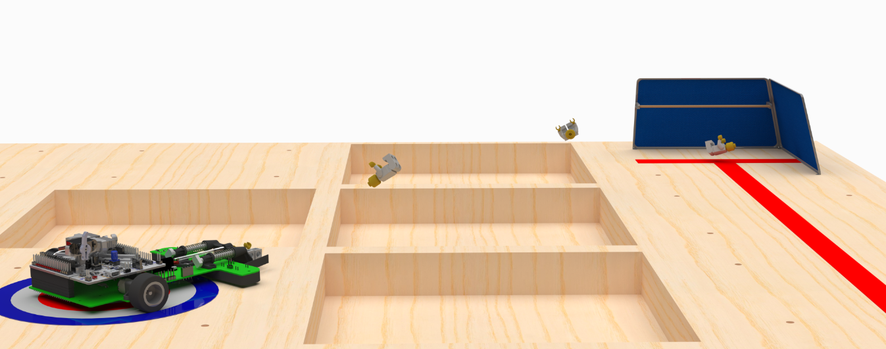

線條追蹤機器人
2024-04-29

概覽
我們大學第三年都要做一個工程課題，今年的題目要我們設計一台尋線機器小車來把場地中間的樂高小人救出到安全區域（路色框框或起點）。
機器人的評分由重量、完成時間、以及可靠性（三次嘗試成功幾次）。我們組裡討論加email轟炸助教後得出了最直接的解決方案：把小車開到中間然後把小人踢到起點。除此之外應該也沒有更快的方式了。我們組員之一Josh也寫了一篇更細節的講了規則跟整體設計過程再這裡。本篇主要寫我負責的電子跟軟體部份。
線條感知
要追著線跑首先要知道線在哪。我們初期研究就有發現一般市面上的紅外線傳感器看不到我們這次要找的紅線，所以大部份已有的方案都不能之接用。
一開始我的一個想法是來把一個條碼掃瞄槍改來用，因為它們的設計就是來遠端感應線條。這樣的話小車就可以向前掃線掃很遠來增加轉彎煞車的反應時間。不過後來試了之後發現很多問題：
- 傳統條碼槍（非相機）用的還是紅外線雷射
- 把紅外雷射換成eBay買的綠雷射後原有的紅外濾鏡就不能用了
- 就算是濾鏡也換了，用可見光感知也是比較容易受到環境光影響
- 掃碼槍用的鏡子對於搖晃很敏感，這樣在車上會很難得出線的絕對位置
- 鏡子的自然頻率只有40赫茲。也就是說如果車速為每秒3公尺，那每次掃描間隔就會有7.5公分！感知那麼慢基本上是不可能控制
條碼槍測試
我們另一個做法是用六對藍色LED加光敏電阻來組成一個陣列。這個方法只需要簡單的電阻分壓電路就可以連接，如果後來真的用了大概表現也會不錯。不過我們後來找到了VTP9812FH光電二極體，這個二極體有內建紅外線濾鏡可以把紅光濾掉。把它和一些綠色LED以及我手上剛好有的2N3904電晶體組起來就可以有效高速的感測地上的紅線了。
光電二極體陣列原型以及光譜響應
馬達與編碼器
車子馬達用的是Pololu的微型金屬馬達。這款馬達又輕功率又大，以30:1的齒輪比最後追線時平均大概可以跑到70%PWM。馬達額定電壓是6V，但是我們用的是2S鋰電池所以實際上兩個馬達都跑8V。結果就是之後測試的時候馬達一直燒壞害我們多買了好幾個。事後還是覺得如果某個東西有個額定數值那最好還是乖乖遵守。
拿到後試跑了一下發現拿追線控制迴路直接控制馬達會有一些問題：
- PWM跟馬達速度之間並不是線性關係
- 由於馬達和齒輪內的靜摩擦的關係，輪子只在PWM於60%以上才會轉。這也就限制住了小車的最低速度
- 除此之外，馬達速度也會受到電池電壓影響
要解決以上問題需要用到閉路控制，為此我們加買了Pololu的五齒光學編碼器。有了它，小車就可以靠輪速回饋來精準的從0到100%控制輪速。
馬達與編碼器
電池
由於重量是評分的一部份，電池輕量化也很重要。一開始我們預計小車電流大約2安培，要開五分鐘的話電池需要至少167毫安時。一開始網路上2S鋰電池最輕的只找到350毫安時所以只好用那個，不過電池大一點在測試時也比較方便。我們之後才想到買電池不一定要買2S，買兩個1S串聯在一起也可以。到最後電池減少成兩個100安培時的1S電池，就只夠小車跑個兩三趟，也把重量從原本的25克降到了5克。
大小電池比較
原型車
在設計最終小車前我們有先做了台原型車。車體用壓克力板水刀切成來連接各種部件。像是光敏電阻跟光電二極體的電路板就可以互相交換比較，其他整合問題也可以提早發現。
光敏電阻原型
光電二極體原型
用原型車測試時發現的一個問題就是光電二極體讀數非常受環境光線影響。膠帶和木地板之間的差別在環境亮和暗的時候看起來完全不一樣。為此後來就3D印了一個檔光罩來保持不同環境下的一致性。
電路板小車
小車的最後設計以客製電路板當車體，把馬達、馬達驅動、光電二極陣列、微控制器等各個組件整合成一體。電路板上包含了：
- 5伏 DC-DC 轉換電路
- 電池接頭和電壓監控
- TC78H660FNG馬達驅動
- TMAG52733D霍爾磁場傳感器（之後被HMC5883L取代，再最後兩個都沒用）
- Nucleo F401RE 開發板排針
- 兩個伺服馬達接頭
- Photodiode and led array, amplified with MMBT3904 transistors (which are SMT version of 2N3904 previously tested)
- 光電二極陣列，用MMBT3904放大（之前2N3904的SMT板本）
- Solder pads for motor encoders
- 馬達編碼器焊盤
- 用來接HC-06藍牙模具的UART串列接頭
與其在車子電路板上自己設計控制IC電路省重量跟空間，直接用現成的Nucleo開發板有幾個優點：
- The STM32F401RE used was a very capable controller, with many hardware timers that could
- STM32F401RE功能很多，尤其是它的計時器可以用來
- Output PWM signal for each motors and servos individually
- 輸出PWM來控制直流馬達和伺服馬達
- 以硬體解碼馬達的正交編碼訊號
- Nucleo開發板有內建燒錄器，不需要再去另外買
- 要把同個STM32放到車子板上需要的硬體也不會少多少
- 小車靠後疊兩層電路板有助於把重心往後拉，這樣可以幫助加速跟轉彎
- Nucleo開發板是學校免費借的，用了省錢
因為開發板是借的所以我們後來也沒有把內建燒錄器折下變外建省重量。
TC78H660FNG是個雙通道H橋IC，可以從小小TSSOP16包裝輸出2安培的電流。我在設計電路的時候把MODE腳接到了STM32其中一個輸出想說這樣之後要轉換模式什麼的也比較有彈性。結果在讀規格書的時候漏看說這個腳得要在接電時就要設好，通電後就不能改了。最後只好手動用跳線來把它設到我需要的模式。
小車板子上的DC-DC傳換器是用來提供電給LED陣列，不過如果它出問題的話也有跳腳改用Nucleo開發板內建調節器供電。
Pololu的馬達編碼器設計是馬達平放時和下面的平面對齊，這個設計讓它可以不用線直接焊到小車上。不過焊球太大的話會卡到編碼器，編碼轉盤的遠近也需要花一些心思調整。不過都調好後跑起來讀轉速都沒什麼問題。
馬達編碼器焊接及整台小車
UART藍牙指令介面
小車的電路板上有一個4腳接頭可以接HC-06藍牙模組。藍牙UART要和USB切換用的話要把Nucleo開發板上的SB14斷開，SB62接上。這樣用USB時只要把CN1的TX腳跟排針上的RX接起來就可以切回去了。藍牙無限通訊非常有用，有了這個我可以再小車還在場上跑的時候用我的筆電遙控、讀取資料、和調試各種參數。
為了多多利用藍牙遠端通訊功能，我再小車軔體裡寫了個指令介面來：
- 移動指令像是自動模式，停止，定速移動，旋轉角度，移動伺服馬達
- 啟動羅盤校正程序以及儲存光敏二極分別在膠帶和木頭上的讀數
- 除錯指令，像是讀取FSM狀態、開始資料流、讀取電池電壓
- 用暫存器來改各種設定以及把設定值儲存到flash裡
這個設定暫存器是這台小車軔體裡最有用的功能之一。整個控制迴路裡的各種參數像是傳感器正規化、PID增益、目標閾值等都可以用這個暫存機制來調改。比如如果我要改小車的基礎速度可以用set speed 0.5這個指令立刻遠端更改。沒有這個就機制的話要改同樣的東西就得把車停下然後拿回來重新燒錄。由於這些更動都是在暫存裡，我可以在亂改數值後回溯到上次儲存到flash裡的數值。
羅盤和輪跡瞄準
TL;DR：羅盤沒什麼用，輪跡（Odometry）超有用
想要發射樂高小人就需要精準的瞄準。一開始我是想說用個電子羅盤來得知絕對方位來轉動小車。不過之前選的TMAG5273結果不能用－它是設計給磁力編碼器用的所以靈敏度不夠探知地球磁場。還好我手上還有個HMC5883L可以用。最先試用了最小和最大值正規化來做校對但是結果得不到我們要的精度。
正規化方向鎖定測試
我找到了一篇期刊論文裡面提到怎麼用橢圓體最小平方法來教正3D羅盤。裡面的第一種方法可以用於在軟鐵硬鐵同時干擾時用，所以我就把它拿來改成了2D板本試試（因為小車只繞著一個軸旋轉，不需要3D）。不過論文裡的公式寫錯了，按它的引用[1, eq. (5). Farkovsky, et al.]正確的是應該是才對。另外公式(3)可以被簡化為，其中 and 。這裡和的公母到最後會互相消掉。這樣計算時需要的回歸器也可以少一個。我用easyMatrix實做的算法如下：
- 用羅盤測量值，以二次行式填充校對資料集
- 用LU分解來執行最小平方法
- 計算硬鐵偏移量
- 計算軟鐵反矩陣
應用矯正結果只需要減去硬鐵偏移再乘上軟鐵反矩陣
校正需要的羅盤測量值用個小程序轉8個角度量，可以用之前提到的指令介面啟動。廢了這麼多力小車終於可以精準的指向特定方位了…
才怪，學了一堆數學看了一堆論文，小車場上的表現還是很爛。這才發現比賽場地上釘滿了鐵螺絲，底下是鐵桌，整個場地的磁場一團亂根本不能用。
哭是哭，但是過程中還是有個新發現：雖然磁場讓人失望，但是測量小程式光用輪距（Odometry）反而表現的不錯。稍微調整了一下後小車可以用這個方法轉好幾圈不歪。所以只要最後接近樂高小人時的角度都一樣，瞄準角度就可以很精準。
小車軔體
STM32F401RE還滿適合做小車的。除了時脈快空間多外，它還有11個超有用的多功能計時器。最後用了9個計時器來做正交解碼、馬達和伺服馬達PWM控制、主循環1kHz計時、音調產生。其中在硬體裡做正交解碼尤其重要，沒有的話要在輪子高速旋轉時準確紀錄距離是基本不可能。另一個計時器負責讓主循環維持在1kHz的速度，這樣控制系統才能在各個功能加加減減的狀態下保持穩定。
小車的各種表現都是透過一個狀態機（FSM）控制的。透過他小車能做的瞄準發射跟線跑等都很容易設計。不過找從跟線狀態切換到瞄準狀態的條件時花了一些時間。用6個光電二極的話我找到最好的方法是用它們的變異和平均值再加上小車已經移動的距離。每個值都有一個閾值，當所有閾值都被超過時FSM就會切換到下一個狀態。這些值如果太松的話小車會沿著終點繞圈造成每次瞄準時的角度歪掉；反之太緊的話在跑路可能會誤判提早停止。還有這個方法對於車速也比較敏感，好在有編碼器保持小車速度一致。
兩個輪子各有一個PID控制器。從PWM佔空比到輪子轉速中間產生的一階系統蠻簡單的，所以我也沒有跑模擬。直接寫了個簡單的圖形介面來看兩輪的閉環響應及調整PID參數。
輪速控制器調整介面
小車跟隨紅線用了第三個PID控制器，以6個光電二極測量值的加權和為輸入來輸出兩輪之間的速度差，加上一個可調的基速後再送給每輪自己的控制器。由左到右最後用了簡單的線性全重-5, -3, -1, 1, 3, 5就跑的很好了。PID參數的話用了組裡的Ethan做的板子調。
調整工具
最後比賽表現
最後比賽我們的小車成功的完成了三次任務，並以以178.5克及8.04秒的最佳成績毫無懸念的贏了比賽！
番外：音樂
我大概是有天時間太多，找了這個叫miditones的程式可以把MIDI檔轉成位元組，用來表達各個音的開始停止和暫停。再加上馬達驅動的方向腳跟STM32的計時器就可以把多葛MIDI檔編入到軔體裡播放。還可以用伺服馬達打節奏!